RTR: Imperium Surrectum
RTR: Imperium SurrectumThe Balkans: Ardiaei, Scordisci and Tylis
2022-09-16 · Rex Basiliscus

Hello, everyone!
It is my pleasure to talk about the three factions of this dev diary, and of the region in question, which is very dear to me personally. While being more of an afterthought of past mods and historical games, the region now known as the Balkans is one that I wish to fill with flavour and substance. The area from Noricum to Taulantia and from Istria and Dalmatia all the way to the banks of the Danube will get its fair share of love in 050 as well as in the future.
Though more difficult to research than Greece, Italy or Asia Minor, we have managed to populate the map with many ancient tribes that were known to Roman and Greek historians. For all those from my neck of the woods, I am especially pleased that settlements like Nauportus, Nesactium, Tergeste, Metulum and Poetovio, and tribes such as the Taurisci, Carni, Iapodes and Histri are making their first appearance in Total War mods (at least all of them together).
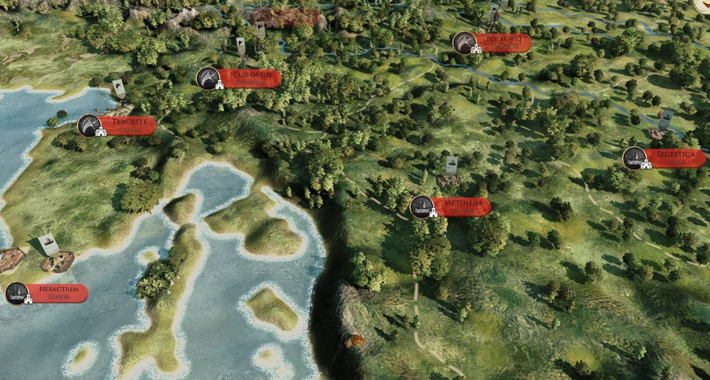
Moving on to Dalmatia, we see known settlements of Idassa (Iader, mod. Zadar) and Salona (mod. Split), as well as Delminium and Daorson, which were already present in Rome2 and RTW. But, especially for this era, the Greek colony on the island of Hvar would have been the most important settlement of the region in the 3rd century BC. A popular tourist spot today, Pharos was home to one of the most important figures in the 2nd Illyrian War – Demetrios of Pharos.
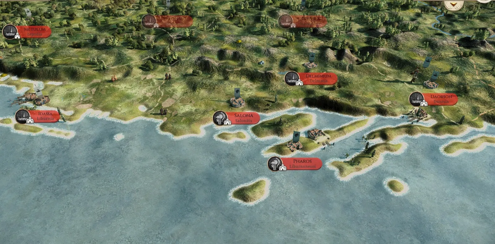
In southern Illyria, we can see that the days when there were only Apollonia and Dyrrhachium up for grabs are behind us. Instead, it has become a tough battlefield for the Antigonids, Epirus, the Ardiaei and potentially even Rome or the Aitolians.
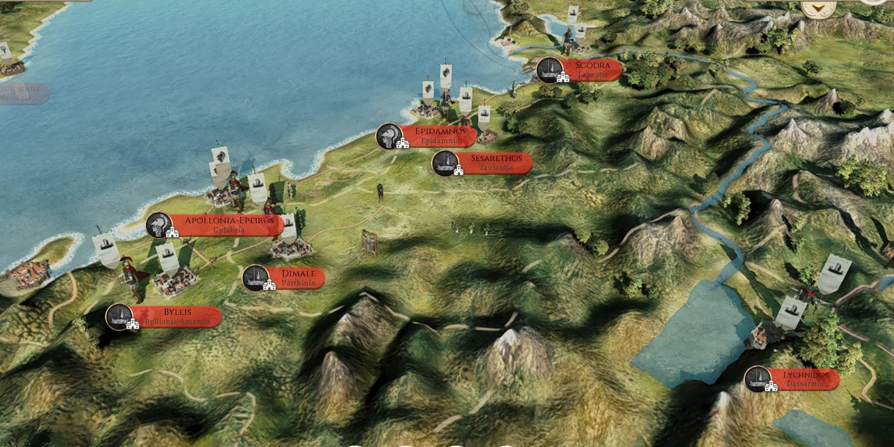
The region which gave the historians many difficulties with figuring out the settlements is the area between the Sava and the Danube rivers, as proper settlements are attested only after the 3rd or even 2nd centuries BC (and in some cases even only with the Roman presence). There is of course evidence of villages, hamlets, and farmsteads, as well as earlier Illyrian and Celtic burial places, but with most of those, we only have names of the subsequent hillforts and towns encountered or established by the Romans. Similar can be said of other regions of the map too – Germania, Britain, Gaul, Numidia, Iran and India, as well as the nomadic lands of the north and the east. Therefore, we have made a conscious decision to bend the historical accuracy to balance out these regions with the rest of the map.
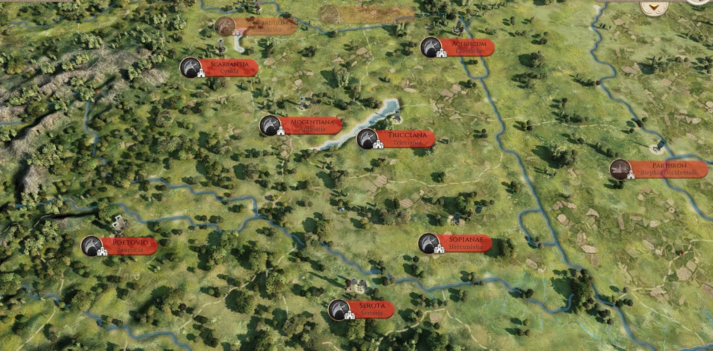
The lands of the Scordisci and the Thracian tribes following the Danube to the east have also been populated with new settlements. I can tell you from my testing experience that the Scordisci especially, will be a strong faction to face after you reach them.
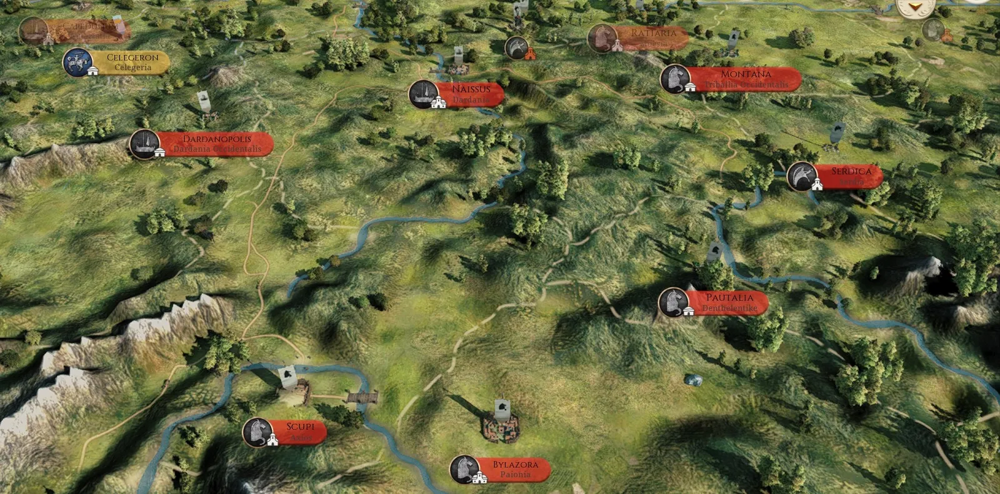
And while Tylis and the Getae struggle for control of the lower Danube region, the Odrysians have plenty of new expansion options which can make them a formidable opponent! And all the three will have a lot of Greek cities along the Black Sea coast to prey upon …
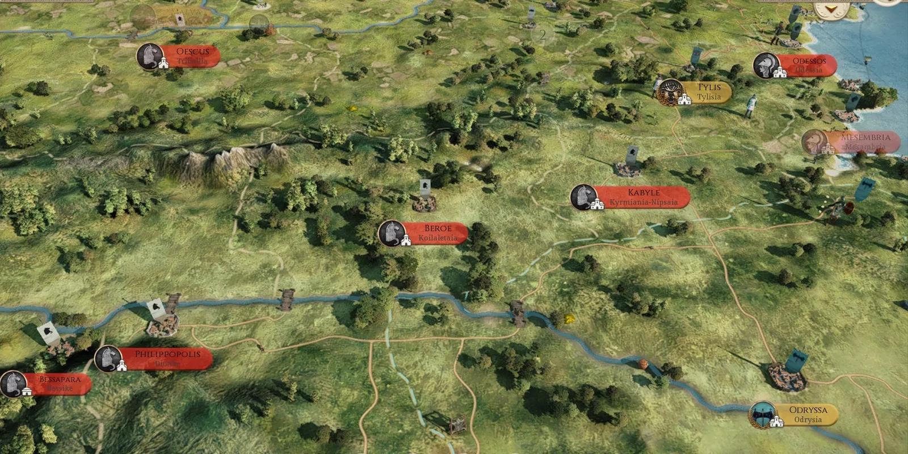
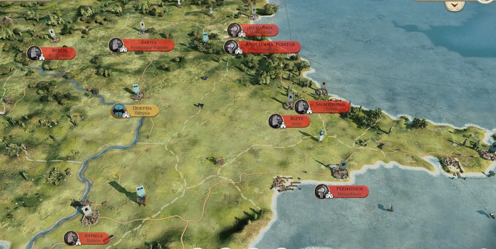
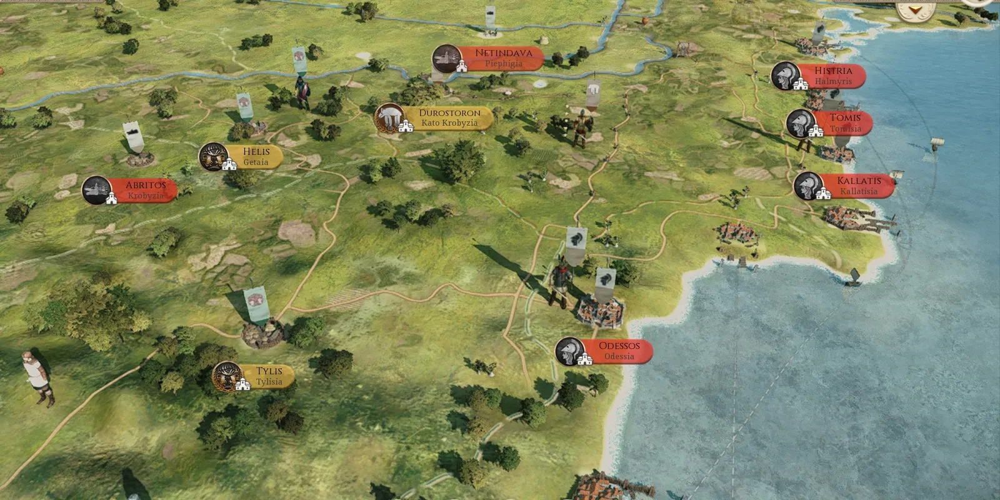

Ardiaei
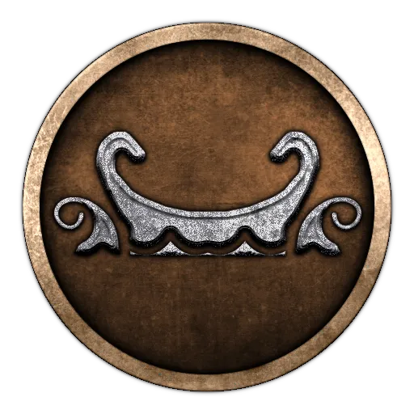
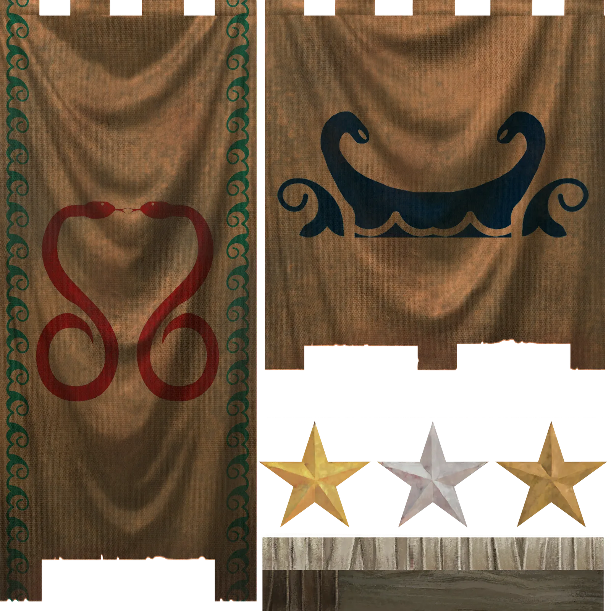
The Illyrian Ardiaei that inhabited the areas of modern Montenegro and northern Albania, are in 270bc still a minor regional power vying for supremacy over their neighbours such as the Autariatai and Labeatai. In RIS, they are a faction that has a lot of potential due to the lack of strong enemies in their immediate vicinity. This means that players will be able to forge a strong kingdom quite easily at start, though in the later campaign the difficulty rises exponentially due to the difference in military strength.
The Ardiaei faction symbol is a ship with two serpents facing each other. Historically, the Ardiaei were a thorn in the side of the Greeks and Romans alike, raiding such distant lands as the Peloponnese and ruling the Ionian and Adriatic seas. They were such a danger to Roman fleets and trade in the Adriatic that Rome launched two Illyrian wars in order to subdue these pirates. As we encourage the players to try out different playstyles, maybe the Ardiaei are a good faction to try out naval raids across the Adriatic and in Greece.
Take their settlements, tear them down and enslave or kill their population. Be a prick to Romans and Greeks alike. You do you. No remorse.
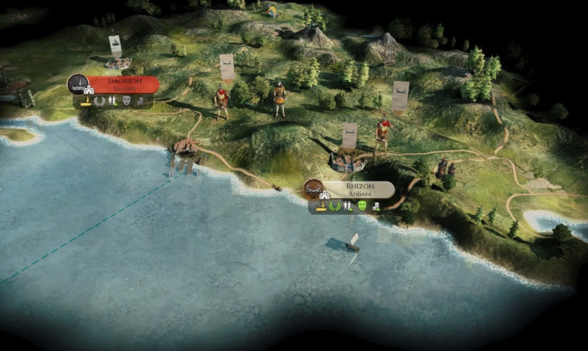
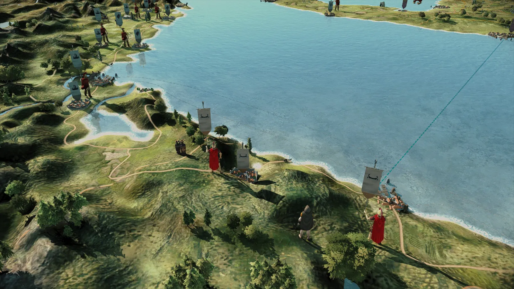
Scordisci
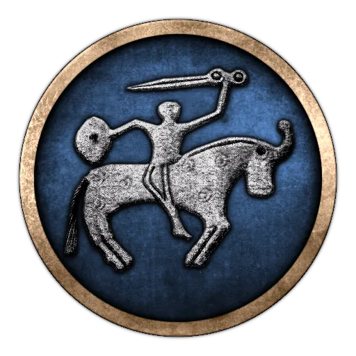
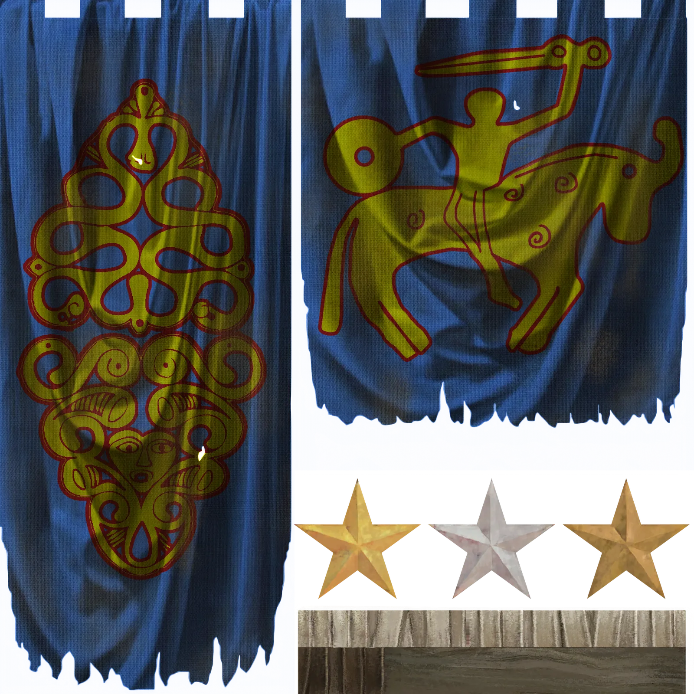
I will post two quotes of ancient historians that describe how the Scordisci were seen by the more "civilized" people.
*The Scordisci took a large amount of booty and thereby persuaded many others to adopt the same policy, as if robbing others' property and ravaging by force . . . was conduct befitting brave men. They thought that strong men are merely confirming the law of nature when they seize the property of weaker men.* (Diodorus Siculus, *Library*, 8.40.35)
*A part of these were inhabited by the Scordisci, who are now widely separated from those same provinces: a people formerly cruel and savage, and, as ancient history declares, accustomed to offer up their prisoners as victims to Bellona and Mars, and from their hollowed skulls greedily to drink human blood.* (Ammianus Marcelinus, *History*, 27.4.4)
Now, these might just be exaggerations from the Roman and Greek points of view, but it gives you an idea of how terrifying these people must have been to them. Their history (written down by Strabo and others) goes something like this: after the Brennus' host was defeated by the Greeks, a part of the army turned back and settled in the area around modern Belgrade and Srem. In the 3rd and 2nd centuries BC many of these Celtic (and Celtizied) people offered their services as mercenaries to the Antigonids and returned home (or in some cases even settled in Greece) with tales to tell about the lands of Macedon.
But after the Roman conquest of Greece and the dissolution of the Antigonid kingdom, this source of employment was removed. A restless warrior however needs a purpose and a target, and after the mid 2nd century BC, the Scordisci began to appear as raiders and enemies on the borders of the Roman province of Macedonia.
As a player, you will have great opportunities for conquest in your neighbourhood. Forge out a powerful kingdom and a mighty host, and bring honour to the Scordisci - my favourite Celtic faction!
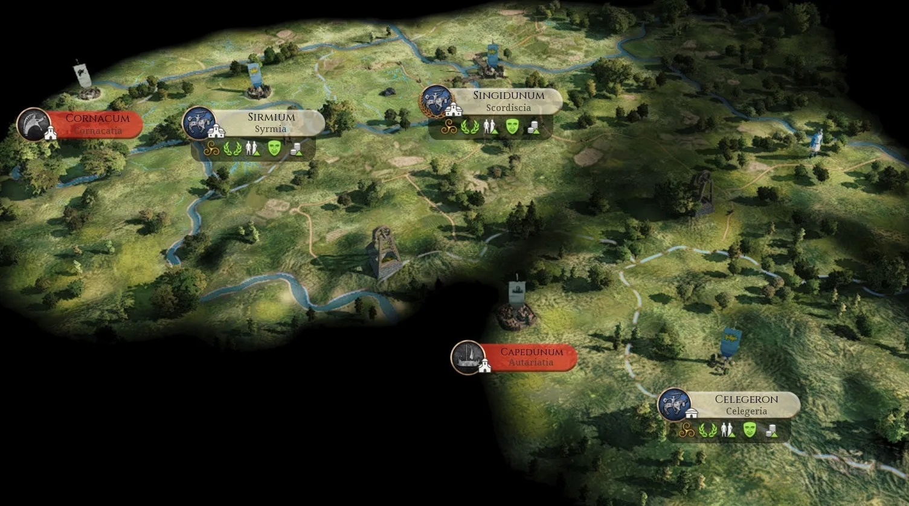
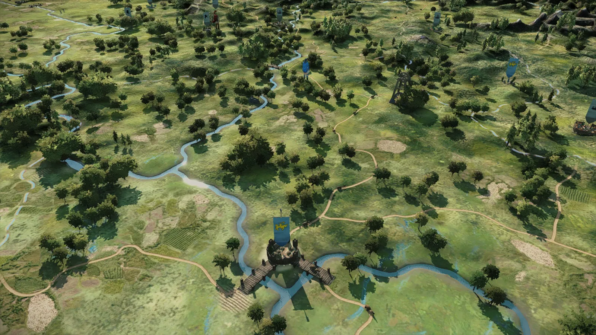
Tylis
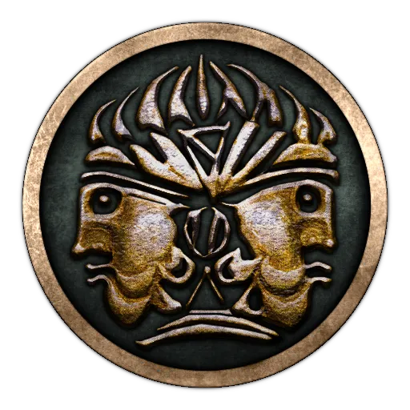
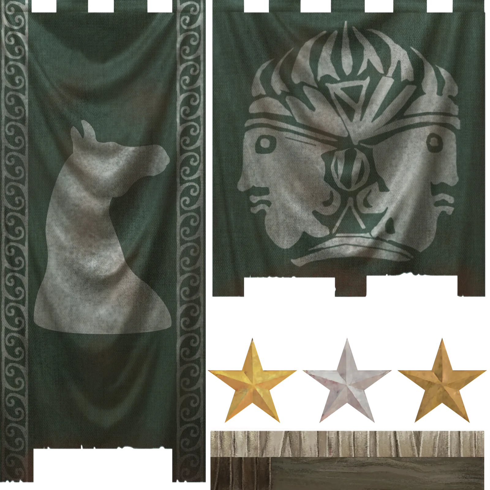
*In spite of all, however, the Byzantines continued to bear the burden to which they had grown accustomed of the war with the Thracians, without departing from their ancient engagements to the Greek states. But when they were attacked also by the Gauls under Comontorius, they found themselves in very grave danger. These Gauls had quitted their homes together with Brennus and his Gauls, and after escaping from the disaster at Delphi reached the Hellespont, where instead of crossing to Asia, they remained on the spot, as they took a fancy to the country near Byzantium. Here when they had conquered the Thracians and had established their capital at Tylis, they placed the Byzantines in extreme danger. At first, during the inroads made under Comontorios the first king, the Byzantines continued to pay on each occasion three thousand, five thousand, and sometimes even ten thousand gold pieces to save their territory from being laid waste.* (Polybius, *Histories*, 4.45-46)
Ah, Tylis! The masters of Thrace and the scourge of the Greeks! Similarly to the Scordisci part of the host, the Celts that went into Thrace have established for themselves another kingdom on the doorstep of the Greeks. Comontorios might have forced Byzantion to pay exorbitant tributes in exchange for peace, but why stop there? On your borders, you have the strong Getae with whom you struggle for control of the region. A worthy foe for your armies! But, to the east and south, along the shores of the Black Sea, the cities of the Greeks will know of your name and fear you, one by one!
As a player, every neighbour is fair game. So expand, multiply, spread fear among your enemies, and remember - the birds of prey follow you into battle, and into death ...
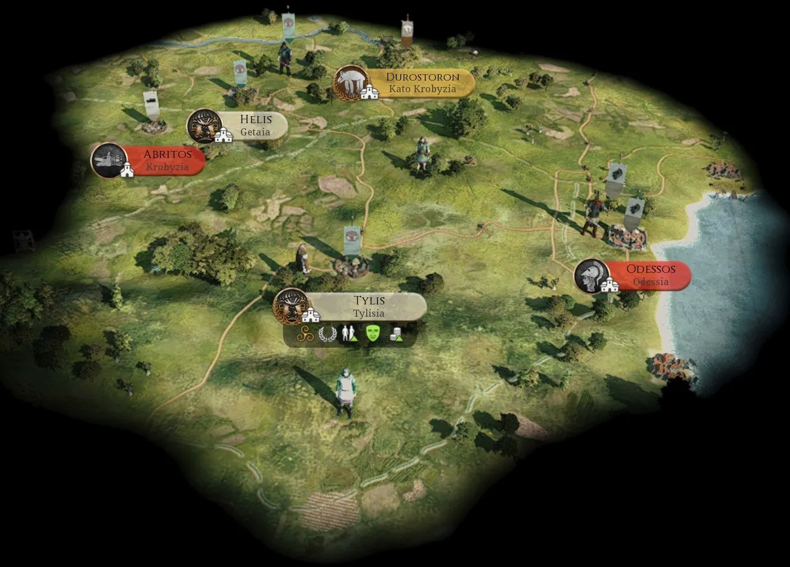
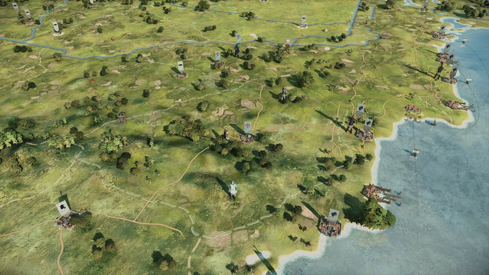

I hope you have enjoyed this “Balkan” dev diary, as it really is one of my favourites to write up.
Having tested some of the mentioned factions, I can honestly suggest them as a good starting choice for new players. You have a lot of easy options for expansion, the tougher factions are all to the south in Greece or far away in Italy, and the rosters themselves are quite fun to play as already (even though they will be redone in the future).
One of my personal favourite factions to play as (and I usually only play the Hellenistic factions or Rome) has been the Scordisci. Though the idea of going pirate and raiding Italy and southern Greece as the Ardiaei is also something I wish to try!
How about you?
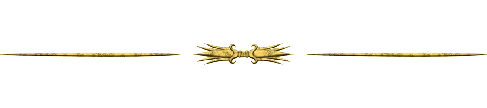